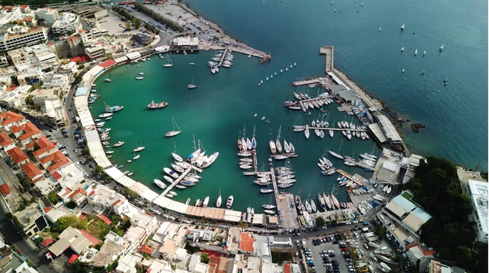

Το Μικρολίμανο ή Φανάρι ή λιμένας Κουμουνδούρου, πρώην Τουρκολίμανο και στην αρχαιότητα Λιμένας Μουνιχίας, αποτελεί σήμερα τουριστική τοποθεσία και περιλαμβάνεται στην ευρύτερη συνοικία της Καστέλας. Βρίσκεται στα βορειοανατολικά της Πειραϊκής χερσονήσου συνορεύοντας με την συνοικία του Νέου Φαλήρου. Μόλις μπείτε στην καρδιά του Μικρολίμανου θα σας μαγέψει αυτή η γραφική και άκρως νησιώτικη εικόνα με τα σπίτια αμφιθεατρικά κτισμένα στο λόφο, ενώ δίπλα σας θα βλέπετε αγκυροβολημένα κότερα και μικρά καΐκια. Τα δεκάδες μαγαζάκια που λειτουργούν κατά μήκος της παραλίας ολοκληρώνουν αυτή την εικόνα και αίσθηση νησιού. Το φαγητό στο Μικρολίμανο φαίνεται πως τα τελευταία χρόνια έχει ανοίξει τους ορίζοντες του και είναι σε ετοιμότητα για να σας ταξιδέψει first-class στις κουζίνες του κόσμου, με διαβατήριο τα πιο γευστικά, αμιγώς επηρεασμένα ή απλώς πειραγμένα από τις διεθνείς κουζίνες, μενού. Απολαμβάνοντας τη θέα και το θαλασσινό αεράκι, είτε επιλέξετε τις παραδοσιακές γεύσεις είτε πιο fusion πρότασεις.
